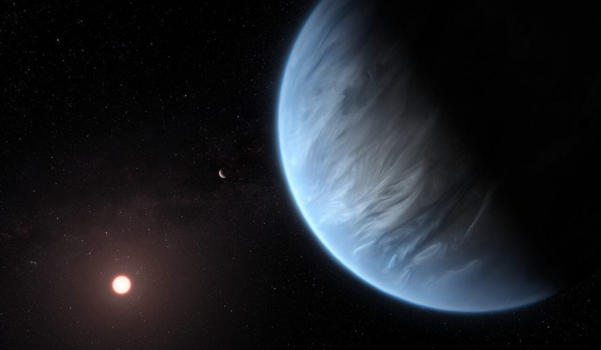
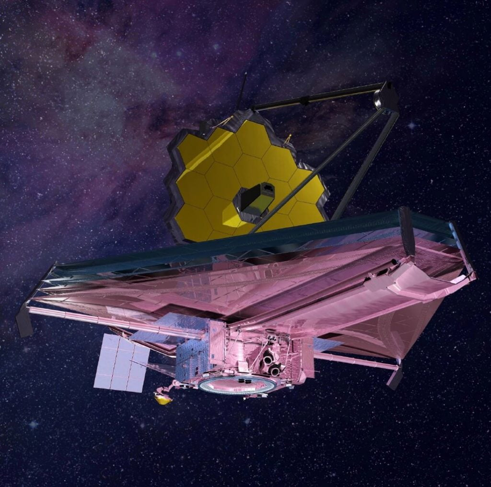

ဒီလို အထောက်အထား ရှာမတွေ့သေးပေမယ့် ပြီးခဲ့တဲ့ ဩဂုတ်လ ၂၆ ရက်နေ့ကတော့ အာကာသ နက္ခတ်ပညာရှင်တွေက အားတက်စရာ တွေ့ရှိချက် တစ်ရပ်ကို တင်ပြခဲ့ကြပါတယ်။ ဒီ တွေ့ရှိချက်ကတော့ နေအဖွဲ့အစည်း အပြင်ဖက်က ကြယ်တွေမှာ ဂြိုလ်အမျိုးအစား အသစ်တစ်မျိုးကို ရှာဖွေတွေ့ရှိ ခဲ့တယ် ဆိုတဲ့ သတင်းပဲ ဖြစ်ပါတယ်။ အာကာသ ပညာရှင်တွေ အဆိုအရတော့ ဒီတွေ့ရှိချက်ဟာ သက်ရှိတွေကို ရှာဖွေတွေ့ရှိဖို့ အရေးပါတဲ့ ခြေလှမ်း တစ်လှမ်း ဖြစ်တယ်လို့ ဆိုပါတယ်။
ဒီသုတေသန တွေ့ရှိချက်အရ အခုတွေ့ရတဲ့ ဂြိုလ်အမျိုးအစား အသစ်ဟာ ဂြိုလ်တစ်ခုလုံးကို သမုဒ္ဒရာကြီးနဲ့ ဖုံးလွှမ်းထားပြီး လေထုထဲမှာလဲ ဟိုက်ဒရိုဂျင်ဓါတ်ငွေ့တွေ အမြောက်အများ ရှိနေတယ်လို့ ဆိုပါတယ်။ ဒီဂြိုလ် အမျိုးအစားကို Hydrogen (ဟိုက်ဒရိုဂျင်) နဲ့ Ocean (သမုဒ္ဒရာ) နှစ်ခုပေါင်းပြီး ဟိုင်းရှင်း (Hycean) လို့ အမည်ပေးထားပါတယ်။ သုတေသီတွေက ဒီ ဂြိုလ်တွေပေါ်မှာ သက်ရှိတွေ ရှိနေနိုင်မယ် လို့ ယူဆကြပါတယ်။
ဒီ သုတေသန တွေ့ရှိချက်တွေကို ယူကေ နိုင်ငံက နာမည်ကျော် ကိန်းဗရစ်ချ် တက္ကသိုလ် (Cambridge University) က ပညာရှင်တွေ ဦးဆောင်တဲ့ အဖွဲ့က တွေ့ရှိခဲ့တာ ဖြစ်ပါတယ်။ သူတို့ရဲ့ တွေ့ရှိချက်ကို Astrophysical Journal မှာ ဩဂုတ်လ ၂၆ ရက်နေ့က တင်ပြခဲ့ပါတယ်။
Hycean ဂြိုလ်။ကမ္ဘာလိုပဲ၊ဒါပေမယ့်ကွာတယ်ဒီသုတေသီ တွေရဲ့ အဆိုအရတော့ ဒီ ဟိုင်းရှင်း ဂြိုလ်တွေဟာ စကြာဝဠာအတွင်း သက်ရှိတွေ ရှာဖွေမှုကို ပိုမိုပြီး သိသိသာသာ မြန်ဆန်လာစေ လိမ့်မယ်လို့ ဆိုပါတယ်။ ဒီဂြိုလ်တွေဟာ ကမ္ဘာနဲ့ ခပ်ဆင်ဆင် တူပါတယ်။ တစ်ဂြိုလ်လုံးကို ဖြစ်စေ၊ ဂြိုလ်ရဲ့ အစိတ်အပိုင်း အများစုကို ဖြစ်စေ ရေတွေနဲ့ ဖုံးလွှမ်းထားပါတယ်။ ဒါပေမယ့် မတူတာတွေလဲ အများကြီးပါ။
ပထမ အချက် အနေနဲ့ အရွယ်အစား ကွာပါတယ်။ ဒီဂြိုလ်တွေရဲ့ အရွယ်အစားက ကမ္ဘာရဲ့ အချင်းထက် ၂.၆ ဆ လောက် ပိုကြီးပါတယ်။ ဒုတိယ အချက်က အပူချိန်ပါ။ ဒီဂြိုလ်တွေရဲ့ မျက်နှာပြင် အပူချိန်က ၂၀၀ ဒီဂရီ စင်တီဂရိတ် လောက်အထိ ရှိပါတယ်။ နောက်ပြီး လေထုထဲမှာလဲ ဟိုက်ဒရိုဂျင် ဓါတ်ငွေ့တွေ အမြောက်များ ပါဝင်ဖွဲ့စည်း ထားပါတယ်။ ပြောရရင်တော့ အရွယ်အစားအားဖြင့် ကမ္ဘာနဲ့ နက်ပ်ကျွန်း တို့ ယူရေးနပ်စ် တို့ ကြားလောက် ရှိမှာပေါ့။
ဒီ အရွယ် ဂြိုလ်တွေကို အရင်ကလဲ ရှာဖွေတွေ့ရှိခဲ့ ဖူးပါတယ်။ သူတို့ကို ဆူပါကမ္ဘာ (Super Earth) သို့ နက်ပ်ကျွန်းဂြိုလ်သေးလေး ( Mini-Neptunes) တွေလို့ ခေါ်ခဲ့ကြပါတယ်။ သိပ္ပံ ပညာရှင်တွေ အဆိုအရတော့ ဒီအရွယ် ဂြိုလ်တွေဟာ စကြာဝဠာထဲမှာ အတွေ့ရ အများဆုံး ဂြိုလ်အရွယ်တွေ ဖြစ်တယ်လို့ ဆိုပါတယ်။
နောက်ပြီး ဟိုင်းရှင်းဂြိုလ်တွေကလဲ တစ်ဂြိုလ်နဲ့ တစ်ဂြိုလ် မတူပဲ ကွဲပြားကြပါသေးတယ်။ ဒီအထဲက အမှောင် ဟိုင်းရှင်း (Dark) နဲ့ အအေး ဟိုင်းရှင်း (Cold) ဆိုပြီး အမျိုးအစား နှစ်မျိုးကို ဒီစာတမ်းမှာ တင်ပြထားပါတယ်။
အမှောင် ဟိုင်းရှင်း ဆိုတာက ဘယ်လိုလဲ ဆိုတော့ နေကို ပတ်နေတဲ့ ဂြိုလ်ဟာ နေဖက်ကို ထာဝရ မျက်နှာ မူနေတဲ့ ဂြိုလ်တွေ ဖြစ်ပါတယ်။ ဥပမာ ကျွန်တော်တို့ လ လိုပေါ့။ လရဲ့ မျက်နှာ တစ်ဖက်ဟာ ကမ္ဘာကို တစ်ချိန်လုံး မျက်နှာ မူနေပြီး ကျန်တစ်ဖက်က အခြားဖက်ကို တချိန်လုံး မျက်နှာမူနေပါတယ်။ ဒီ အမှောင် ဟိုင်းရှင်းတွေမှာ နေဖက် မျက်နှာမူနေတဲ့ အခြမ်းက အမြဲ လင်းနေပြီး ကျန်တဖက်က အမြဲ မှောင်နေပါတယ်။ ဒီ အမှောင်ဟိုင်းရှင်း တွေမှာတော့ အမှောင်ဖက် ခြမ်းမှာပဲ သက်ရှိတွေ နေထိုင်နိုင်တဲ့ သဘာဝ ပတ်ဝန်းကျင်တွေ ရှိနေမယ်လို့ ဆိုပါတယ်။
အအေး ဟိုင်းရှင်း တွေကကျတော့ သူတို့ ပတ်နေတဲ့ ကြယ်ကနေ အလင်းရောင်နဲ့ အပူချိန် အနည်းငယ်ပဲ ရတဲ့ ဂြိုလ်တွေ ဖြစ်ပါတယ်။ ဒီ အအေး ဟိုင်းရှင်းတွေပေါ်မှာတော့ သက်ရှိတွေ ရှင်သန်နိုင်စွမ်း ရှိမရှိ မသိရပါဘူး။
ဆူပါကမ္ဘာ၊မီနီနက်ပ်ကျွန်းနှင့်ဟိုင်းရှင်းများ
ဆူပါ ကမ္ဘာ (Super Earth) တွေက ကမ္ဘာလိုပဲ ကျောက်သားထုနဲ့ ဖွဲ့စည်းထားတဲ့ ဂြိုလ်တွေ ဖြစ်ပါတယ်။ ဒါပေမယ့် ကမ္ဘာထက် အရွယ် ပိုကြီးကြလို့ သူတို့ကို ဆူပါ ကမ္ဘာ တွေလို့ ခေါ်တာ ဖြစ်ပါတယ်။ ဒီဂြိုလ် အမျိုးအစား တွေမှာ ဘယ်လို လေထု အမျိုးအစား ရှိသလဲ၊ သူတို့ရဲ့ လေထုထဲမှာ ပါဝင် ဖွဲ့စည်း ထားတဲ့ ဓါတ်ငွေ့တွေက ဘာတွေလဲ၊မျက်နှာ ပြင် အပူချိန် ဘယ်လောက် ရှိလဲ အစရှိတာတွေကို သေချာ မသိရ သေးပါဘူး။ ဒါပေမယ့် အချို့ ဂြိုလ်တွေက သက်ရှိတွေ အသက်ရှင်နေထိုင်နိုင်လောက်တဲ့ အပူချိန် ရှိတဲ့ Habitable Zone လို့ ခေါ်တဲ့ နေရာ ရပ်ဝန်းမှာ ရှိနေတာကိုတော့ တွေ့ရပါတယ် (Habitable zone ဆိုတာက မိခင် ကြယ်ကနေ သမမျှတတဲ့ အပူချိန် ရနိုင်တဲ့ အကွာအဝေး ဖြစ်ပါတယ်။ ဒီ့ထက်နီးရင် ပူလာပြီး ဒီ့ထက် ဝေးသွားရင်တော့ အေးသွားပါတယ်)။ ဒီအပူချိန် အနေအထားမှာ ဒီဂြိုလ်တွေ ပေါ်မှာ ‘ရေ’ ရှိကောင်း ရှိနေနိုင်မှာ ဖြစ်ပါတယ်။မီနီ နက်ပ်ကျွန်း (Mini-Neptunes) တွေကတော့ သက်ရှိတွေ အသက်ရှင်နိုင်စွမ်း မရှိဘူးလို့ ပညာရှင်တွေက ယုံကြည် ကြပါတယ်။ မီနီ နက်ပ်ကျွန်း အများစုက မာကျောတဲ့ မျက်နှာပြင်လဲ မရှိကြပါဘူး။ ပြီးတော့ ဂြိုလ်ပေါ်က အပူချိန်နဲ့ ဖိအားကလဲ သက်ရှိတွေ အသက်ရှင်နိုင်စွမ်း ရှိတဲ့ အပူချိန်နဲ့ ဖိအားမျိုး မဟုတ်ကျပါဘူး။
အခု သုတေသန စာတမ်းရဲ့ တင်ပြချက် အရ ဆိုရင်တော့ အပေါ်မှာ ပြောခဲ့တဲ့ ဂြိုလ်တွေ အထဲက အချို့ဟာ သက်ရှိတွေ အသက်ရှင် ဖြစ်ထွန်းနိုင်တဲ့ အခြေအနေမျိုး ရှိနေမယ်လို့ ဆိုပါတယ်။ အဲ့သည် ဂြိုလ်တွေကတော့ ဟိုင်းရှင်းဂြိုလ် တွေပဲ ဖြစ်ပါတယ်။
Hycean ဂြိုလ်တွေမှာသက်ရှိတွေရှင်သန်နိုင်မလား
ဒါဆို ဟိုင်းရှင်းတွေမှာ ဘယ်လိုလုပ်ပြီး သက်ရှိတွေ ရှင်သန်နိုင်မှာလဲ။ ပထမ အချက်ကတော့ ရေရှိနေ ခြင်းပဲ ဖြစ်ပါတယ်။ ရေဟာ သက်ရှိတွေ ဖြစ်ထွန်းဖို့ အတွက် မရှိမဖြစ် လိုအပ်တယ်လို့ ပညာရှင်တွေက ယုံကြည်ပါတယ်။ ဒီ ဟိုင်းရှင်းတွေမှာ ကမ္ဘာပေါ်မှာလိုမျိုး မာကျောတဲ့ မျက်နှာပြင် ရှိနေနိုင်ပါတယ်။ဟိုင်းရှင်း အများစုကတော့ ကမ္ဘာထက်လဲ ပိုပြီး ကြီးကြသလို ပိုပြီးလဲ ပူပြင်းပါတယ်။ ဒါပေမယ့် ဒီလို ပူနေသည့်တိုင်အောင် သမုဒ္ဒရာတွေ ရှိနေနိုင်မယ်လို့ စာတမ်းတင်ပြတဲ့ သုတေသီ တွေက ပြောပါတယ်။ ဒီ ပတ်ဝန်းကျင်က ဘာနဲ့ ဆင်ဆင် တူမလဲ ဆိုတော့ ကမ္ဘာပေါ်က အရမ်း ကြမ်းတမ်းတဲ့ ရေထုထဲက သက်ရှိတွေ ရှင်သန်နေတဲ့ ပတ်ဝန်းကျင် မျိုးနဲ့ ဆင်ဆင် တူပါတယ်။ ဥပမာ ရေဆူမှတ်ထိအောင် ပူပြင်းတဲ့ နဂါးပွက် အိုင်လို နေရာမျိုးတွေမှာ ရှင်သန်နေတဲ့ သက်ရှိတွေ ကမ္ဘာပေါ်မှာ ရှာဖွေတွေ့ရှိ ထားပါတယ်။ ဒီတော့ ဒီဂြိုလ်တွေ ပေါ်မှာလဲ သက်ရှိတွေ မရှိနေဘူးလို့ မပြောနိုင်ပါဘူး။
ဒီအချက်ကနေ ဆက်စပ်ပြီး စဉ်းစားမယ် ဆိုရင် ဒီဂြိုလ်ကြီးတွေ ရှိနေတဲ့ ကြယ်အဖွဲ့အစည်းတွေရဲ့ Habitable zone ဟာလဲ ကျွန်တော်တို့ ကမ္ဘာနဲ့ တူတဲ့ ဂြိုလ်တွေနဲ့ ဖွဲ့စည်းထားတဲ့ ကြယ်အဖွဲ့အစည်းတွေရဲ့ Habitable Zone ထက် ပိုပြီး ကြီးမယ်လို့ ယူဆလို့ ရပါတယ်။ ဒါကလဲ စကြာဝဠာထဲမှာ သက်ရှိတွေ ရှင်သန်နိုင်တဲ့ ဂြိုလ်တွေ ရှာဖို့ ပိုပြီး အခွင့်အလမ်း ကောင်းလာစေပါတယ်။ ဘာကြောင့်ဆို အရင်က ကျွန်တော်တို့ လှစ်လျှူ ရှုခဲ့ကြတဲ့ ဂြိုလ်တွေဟာ တကယ်တမ်းတော့ သက်ရှိတွေ မှီတင်းနေထိုင် နေနိုင်တဲ့ ဂြိုလ်တွေ ဖြစ်နေနိုင်လို့ပါ။
ဒီ့အရင်က မီနီ နက်ပ်ကျွန်း K2-18b ကို လေ့လာခဲ့တဲ့ သုတေသန စာတမ်း အရလဲ ဟိုင်းရှင်းတွေမှာ သက်ရှိတွေ ရှင်သန်နေနိုင်တယ် ဆိုတဲ့ အယူအဆကို ထောက်ခံနေပါတယ်။

သက်ရှိတို့မှီတင်းနေထိုင်သောအမှတ်အသားများအားရှာဖွေခြင်း
ဒါဆို ဒီလောက်ဝေးတဲ့ နေရာက ဂြိုလ်တွေပေါ်မှာ သက်ရှိတွေ ရှိနေ မနေ ဘယ်လို သိနိုင်မလဲ။ ဒီဂြိုလ်တွေက မှန်ပြောင်းနဲ့တောင် သေချာ မြင်ရတာ မဟုတ်ပါဘူး။ သိပ္ပံ ပညာရှင်တွေဟာ သက်ရှိတွေ ရှာတဲ့ အခါမှာ သက်ရှိတွေက ထုတ်ပေးတဲ့ အမှတ်အသား (Biosignatures) တွေကို ရှာဖွေတာ ဖြစ်ပါတယ်။ တနည်းအားဖြင့် ဂြိုလ်ရဲ့ လေထုထဲမှာ သက်ရှိတွေကနေ ထုတ်လွှတ်လိုက်တဲ့ ဓါတ်ပစ္စည်းတွေကို ရှာဖွေတာပဲ ဖြစ်ပါတယ်။ ဒီဓါတ်တွေထဲမှာ အတွေ့ရ များတဲ့ ဓါတ်ငွေ့တွေကတော့ အောက်ဆီဂျင်၊ အိုဇုန်း၊ မီသိန်း၊ နိုက်ထရပ်စ် အောက်ဆိုက် (nitrous oxide)၊ မီသိုင်း ကလိုရိုဒ် (methyl chloride) နဲ့ ဒိုင်မီသိုင်း ဆာလ်ဖိုဒ် (Dimethyl Sulphide) တွေပဲ ဖြစ်ကြပါတယ်။ဒီအထဲက မီသိုင်း ကလိုရိုဒ် (methyl chloride) နဲ့ ဒိုင်မီသိုင်း ဆာလ်ဖိုဒ် (Dimethyl Sulphide) တွေဟာ ကမ္ဘာပေါ်မှာတော့ သိတွေ့ရလေ့ မရှိပါဘူး။ ဒါပေမယ့် ဟိုက်ဒရိုဂျင် ဓါတ်များတဲ့ ဂြိုလ်တွေပေါ်မှာတော့ ပေါပေါများများ တွေ့ရနိုင်ပါတယ်။
ဒီသုတေသန စာတမ်းရှင်တွေရဲ့ အဆိုအရ “ကျွန်တော်တို့က ကမ္ဘာပြင်ပက သက်ရှိတွေ ရှာဖို့ ကြိုးစားကြတဲ့ အခါ ကမ္ဘာနဲ့ တူတဲ့ ဂြိုလ်တွေကို လိုက်ရှာလေ့ ရှိကြပါတယ်။ ဒါပေမယ့် ဒီလို ဟိုင်းရှင်းတွေမှာ သက်ရှိတွေရဲ့ အမှတ်အသားတွေ ရှာတာက ပိုပြီး လွယ်မယ်လို့ ထင်ပါတယ်” လို ဆိုပါတယ်။
ဒီစာတမ်းတင်ပြတဲ့ သုတေသီတွေရဲ့ အဆိုအရတော့ ဟိုင်းရှင်းတွေ ပေါ်မှာ အပေါ်က ပြောခဲ့တဲ့ ဓါတ်ငွေ့တွေကို ပိုပြီး လွယ်လွယ်ကူကူ ရှာဖွေနိုင်မယ် လို့ ဆိုပါတယ်။ အထူးသဖြင့် ဒီလို အရွယ်ကလဲ ပိုကြီးတယ်၊ အပူချိန်ကလဲ ပိုမြင့်ပြီး လေထုထဲမှာလဲ ဟိုက်ဒရိုဂျင် ဓါတ် အများအပြား ရှိနေတဲ့ ဂြိုလ်တွေပေါ်မှာ သက်ရှိတွေရဲ့ အမှတ်အသား ဓါတုပစ္စည်းတွေ ရှာရတာက ကမ္ဘာအရွယ် ဂြိုလ်တွေပေါ်မှာ ရှာရတာထက် ပိုလွယ်မယ်လို့ ဆိုပါတယ်။ သုတေသီ တွေက မကြာခင် လွှတ်တင် တော့မယ့် ဂျိမ်းစ်ဝဘ် တယ်လီစကုပ် ကြီးနဲ့ ကြည့်ရှုလေ့လာဖို့ သင့်တော်တဲ့ ဟိုင်းရှင်းတွေရဲ့ စာရင်းကိုတောင် ပြုစုထားပြီး ကြပါပြီ။
ဆက်လက်လေ့လာမည့်သုတေသနများ
ဒီ ဟိုင်းရှင်းတွေပေါ်က သက်ရှိ ဓါတု အမှတ်အသား တွေ ရှာဖွေဖို့ဟာ သိပ်တော့ စောင့်ရတော့မှာ မဟုတ်ပါဘူး။ အခုကတဲက အသေးစိတ် လေ့လာဖို့ ဟိုင်းရှင်းတွေ စာရင်းကို ပြုစုထားပြီး ဖြစ်ပါတယ်။ မကြာခင် နာဆာက လွှတ်တင်တော့မယ့် ဂျိမ်းစ်ဝဘ် တယ်လီစကုပ် (James Webb Space Telescope) နဲ့ဆို သူတို့ရဲ့ လေထုကို လေ့လာ တိုင်းတာနိုင်မှာ ဖြစ်ပါတယ်။ အခု ရွေးချယ် ထားတဲ့ ဂြိုလ်တွေကလဲ သိပ်မဝေးလှတဲ့ ဂြိုလ်တွေပါ။ အားလုံးက ကမ္ဘာကနေဆို အလင်းနှစ် ၃၅ နှစ်ကနေ နှစ် ၁၅၀ အတွင်းမှာ ရှိကြပါတယ်။
ဒီ ရွေးထားတဲ့ ဂြိုလ်တွေထဲက တစ်လုံးလုံး ပေါ်မှာသာ သက်ရှိတွေ ရှိနေမယ် ဆိုရင် ဒီ ဂျိမ်းစ်ဝဘ် တယ်လီစကုပ် ကြီးက ရှာဖွေ ထောက်လှမ်းနိုင်ဖို့ အခွင့်အလမ်း အတော်များတယ်လို့ ဆိုကြပါတယ်။ အကယ်လို့သာ ဒီလို ဟိုက်ဒရိုဂျင်တွေ ပြည့်နေတဲ့ ဂြိုလ်ပေါ်မှာသာ သက်ရှိတွေ တွေ့ရှိခဲ့မယ် ဆိုရင်တော့ စကြာဝဠာ ထဲက သက်ရှိတွေရဲ့ သဘာဝနဲ့ ပတ်သက်လို့ ကျွန်တော်တို့ နားလည် ထားသမျှကို အပြောင်းလဲကြီး ပြောင်းလဲ သွားစေမှာ ဖြစ်ပါတယ်။
Reference: Hycean Planets Might Be Habitable Ocean Worlds